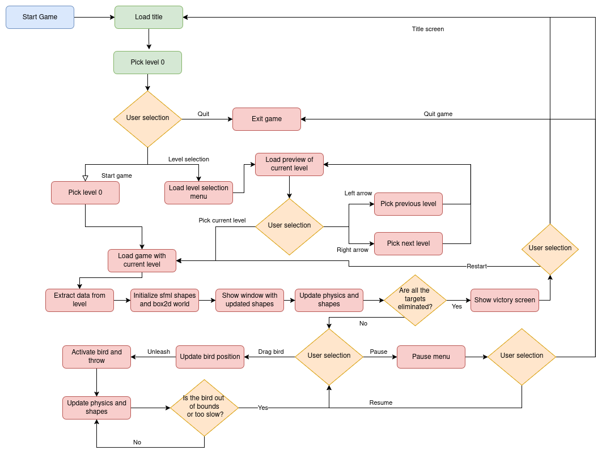

I. Visión General del Proyecto
Este documento presenta una descripción técnica detallada del juego Angry Politicians. El proyecto fue concebido como un ejercicio integral de desarrollo de videojuegos, abarcando desde la creación de un sistema de física de bajo nivel hasta la implementación de la lógica de juego y las interfaces de usuario. Para las tareas de renderizado, gestión de ventanas y manejo de sprites, se utilizó la librería multiplataforma SFML (Simple and Fast Multimedia Library), gracias a su simplicidad y potencia.
Arquitectura General del Sistema
La arquitectura del juego está diseñada de manera modular para separar las distintas responsabilidades y estados del juego. Este diseño se compone de cinco partes fundamentales que gestionan el flujo de la experiencia del usuario.
Diagrama de alto nivel que ilustra el flujo entre las distintas pantallas del juego.
- Título: Es la puerta de entrada al juego. Ofrece al jugador las opciones de iniciar una nueva partida (cargando el nivel por defecto), navegar a la pantalla de selección de nivel o cerrar la aplicación.
- Selección de Nivel: Este menú presenta los niveles disponibles a través de un sistema de páginas. El jugador puede navegar entre ellas usando flechas y, una vez que selecciona un nivel, el juego procede a cargarlo.
- Bucle del Juego: El núcleo interactivo donde se desarrolla la acción principal.
- Menú de Pausa: Accesible durante el juego, permite reanudar la partida, reiniciarla o volver al menú principal.
- Menú de Victoria: Se muestra al eliminar a todos los objetivos de un nivel. Ofrece la opción de reiniciar el nivel para mejorar la puntuación o salir.
II. El Núcleo Técnico: Motor de Física Personalizado
La innovación técnica más significativa de "Angry Politicians" reside en su sistema de física. En lugar de utilizar Box2D de manera convencional, optamos por desarrollar un wrapper o capa de abstracción. Este wrapper nos otorga un control total sobre el proceso de detección de colisiones, permitiéndonos reemplazar la narrow phase de Box2D por nuestra propia implementación del Teorema del Eje Separador (SAT).
Análisis Detallado del Pipeline de Física
El ciclo de vida de la simulación física en cada frame (una llamada a m_world->Step()) se divide en un pipeline híbrido de seis fases, que combina la robustez de Box2D con la especificidad de nuestro código.

Fase 1: Broad Phase (Box2D)
Esta es una fase de optimización crucial. Box2D utiliza su estructura de datos altamente optimizada, b2DynamicTree, para identificar de manera muy eficiente (en tiempo $O(\log n)$) todos los pares de objetos cuyas cajas delimitadoras (AABBs) se superponen. Esto genera una lista de "contactos potenciales" que necesitan una verificación más precisa.
Fase 2: Narrow Phase (Nuestra Implementación)
Aquí es donde nuestra lógica personalizada toma el control. Dentro del callback PreSolve, que Box2D llama para cada contacto potencial, deshabilitamos temporalmente el contacto y ejecutamos nuestro propio chequeo de colisión. Este chequeo se basa en el algoritmo SAT para polígonos y en cálculos de distancia para círculos. Basado en el resultado, decidimos si el contacto es real (y por lo tanto, lo volvemos a habilitar) o si debe ser ignorado.
Fases 3 y 5: Solver e Integration (Box2D)
Una vez que nuestra Narrow Phase ha filtrado los contactos, el Solver de Box2D se encarga de procesar los contactos que quedaron habilitados. Calcula los impulsos de separación, resuelve las penetraciones y aplica las fuerzas de fricción y restitución. Posteriormente, la fase de Integration utiliza estos resultados para actualizar las velocidades y posiciones de todos los cuerpos en el mundo.
Fases 4 y 6: Post-Solve y Cleanup (Nuestra Implementación)
Después de que el Solver ha hecho su trabajo, nuestro callback PostSolve se activa. Este es el punto de conexión clave con la jugabilidad. Aquí, podemos acceder al impulso que se aplicó en la colisión y usarlo para implementar mecánicas como el daño a los objetos. Finalmente, en la fase de Cleanup, si dos objetos se separan, el evento EndContact nos permite limpiar cualquier dato en caché que hayamos guardado para ese contacto.
III. Lógica del Juego y Creación de Niveles
La estructura del juego está definida por un diagrama de flujo detallado que gestiona todas las interacciones del usuario y los estados del juego.
Diagrama de flujo detallado que muestra las decisiones y procesos dentro del juego.
Proceso de Creación de Objetos
Una de las características más importantes de nuestro diseño es que los niveles no están codificados de forma fija (hardcoded). En su lugar, se cargan a partir de datos estructurados, lo que permite una gran flexibilidad. Ofrecemos soporte nativo para figuras como rectángulos, círculos, triángulos y hexágonos, además de la capacidad de crear cualquier polígono simple a partir de una lista de puntos.
Declaración de Nivel en 5 Pasos
- Declaración de Límites: Cada nivel puede tener un tamaño diferente. Usamos la
Viewde SFML como una cámara para manejar niveles grandes. - Declaración de Inicios: Se definen coordenadas de inicio que sirven como referencia para posicionar objetos en una cuadrícula de "bloques".
- Seteo de Objetos Dinámicos: Se definen los valores de los arreglos (
objSizes,objPositions, etc.) y se pasan a una funciónsetObjects. Esta función itera y crea tanto el cuerpo físico en Box2D como la figura visible en SFML. A estos cuerpos se les añade información extra como vida y defensa. - Seteo de Objetos Estáticos: Se utiliza el mismo proceso que para los dinámicos, pero los cuerpos se marcan como estáticos (inmóviles), como el suelo o plataformas fijas.
- Seteo de Objetos Objetivo: Son los "políticos". Se crean de manera similar pero son siempre círculos y tienen la propiedad de vida. La eliminación de todos ellos es la condición de victoria.
IV. Mecánicas Detalladas del Juego
Sistema de Vida, Defensa y Destrucción
"Dentro de los 'bodies' del mundo físico de Box2D, se añade información extra para determinar cómo se modifica la vida del objeto después de una colisión. Para determinar cuándo a un objeto se le acaba la vida, se modificó el comportamiento del PostSolve, para calcular el daño."
Este sistema es el núcleo de la interactividad. Cada objeto dinámico tiene dos propiedades clave: vida y defensa. La defensa actúa como un umbral de daño: si un impacto genera un impulso inferior al valor de defensa del objeto, este no sufre daño. Si el impulso es superior, el daño se calcula como el impulso total multiplicado por un factor, y se resta de la vida del objeto.
La lista toDestroy es procesada de forma segura en el bucle principal del juego para eliminar los cuerpos del mundo físico y de SFML, generando al mismo tiempo los efectos de partículas correspondientes para dar feedback visual al jugador
Habilidad Especial del Pájaro y Sistema de Partículas
Para añadir una capa de estrategia, los pájaros poseen habilidades que el jugador puede activar con un clic durante el vuelo. Estas habilidades otorgan un impulso instantáneo a su velocidad, lo que se traduce en un impacto de mayor fuerza y, por consiguiente, un daño incrementado. Adicionalmente, para mejorar la retroalimentación visual, se implementó un sistema de partículas simple para crear efectos como explosiones o la desaparición de objetos.
V. Galería del Juego
Aquí puedes ver algunas capturas de pantalla de "Angry Politicians" en acción, mostrando la interfaz, la jugabilidad y los efectos visuales.